Rocket CompaniesComsumer UX2023 - 2025
Fixing an inconsistent and outdated mortgage platform experience.
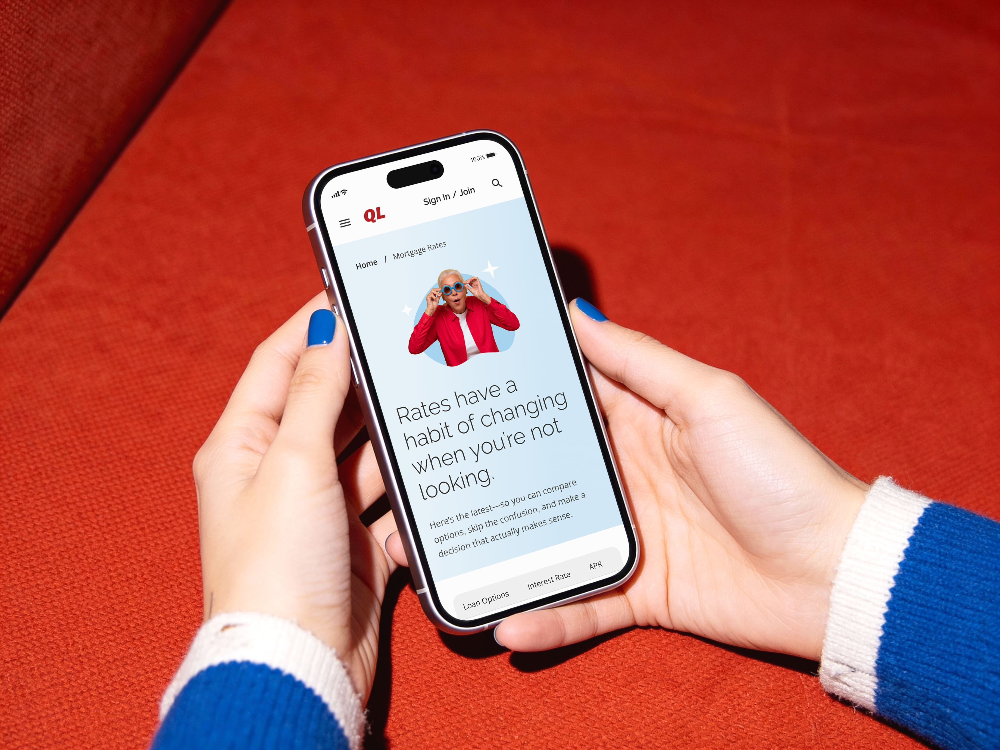
Problem
A fragmented experience that reduced trust
Quicken Loans, part of Rocket Companies, was operating with a fragmented and outdated digital experience. Years of design and technical debt had created inconsistencies across web, product, and marketing touch-points, especially in key journeys like checking loan eligibility, rate exploration, calculators, and loan applications.
This led to user confusion, reduced trust, and friction in high-stakes decision moments, ultimately impacting engagement and conversion. Internally, it slowed development and limited the team’s ability to ship improvements or innovate effectively.
Solution
From outdated and inconsistent to clear and usable
We addressed the problem through user research and a review of the existing experience, followed by a redesign of both the product and the system behind it. The website and key journeys, such as checking loan eligibility, rate exploration, and loan applications, were simplified and made more consistent to reduce confusion and improve usability.
At the same time, we refreshed the brand and tone of voice to be clearer, more approachable, and more relevant to modern homebuyers. This was supported by a reusable design system, enabling teams to build consistently, improve accessibility, and ship updates more efficiently.
Impact
01. A clearer, more trustworthy experience
Simplifying key journeys reduced confusion in high-stakes moments. Users could better understand their options and move forward with greater confidence.
02. Improved engagement in key journeys
Aligning content, navigation, and calls-to-action with user intent increased engagement across high-traffic areas, particularly within the learning centre and rate exploration flows.
03. Stronger progression toward conversion
By connecting educational content more directly to decision-making paths, we improved user movement from exploration to action, reducing friction along the way.
04. Consistency across all touch-points
A unified system aligned product, marketing, and content experiences, creating a cohesive platform with a clearer, more recognisable voice.
05. Faster delivery through a reusable system
The design system enabled teams to build and ship more efficiently, reducing duplication and improving collaboration across design, content, and engineering.
01 Understanding the Users
Understanding the modern homebuyer
Before defining any direction, we focused on understanding the needs, behaviors, and perceptions of today’s homebuyers. I partnered with Rocket’s market research team to conduct a series of qualitative interviews across four key user profiles identified through existing research.
We spoke with 18 participants who were either actively buying a home or had recently gone through the process. These conversations helped us understand how users approach decisions like checking loan eligibility, comparing rates, and applying for a loan, along with the frustrations and uncertainties they face along the way.
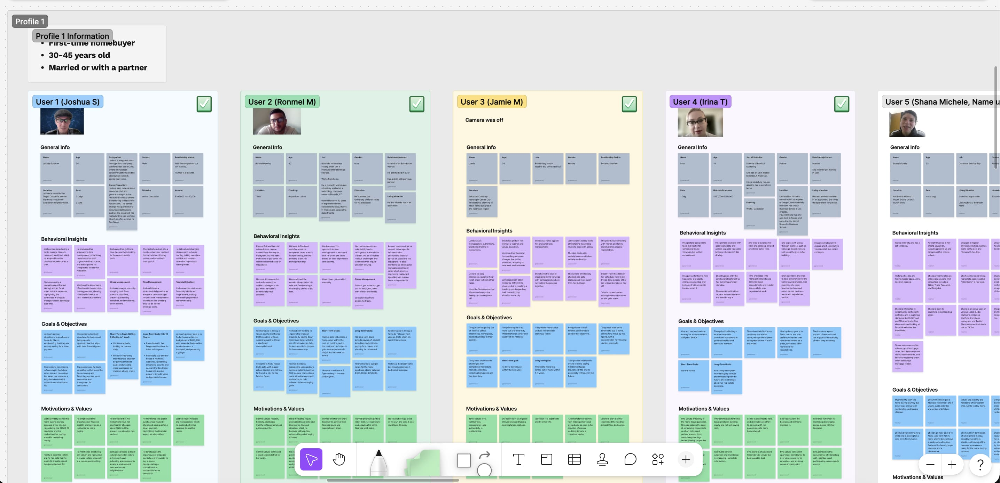
Interview synthesis for Profile 1
User Research Key Takeaways
01. Trust is low across platforms and professionals
Users are skeptical of both digital tools and real estate agents, citing hidden costs, unclear information, and inconsistent communication.
02. The process feels complex and fragmented
Users struggle to understand the full journey, costs, steps, and timelines, with information scattered across multiple sources.
03. Financial uncertainty is the biggest barrier
Affordability, debt, and fluctuating rates create constant hesitation, with many users delaying decisions until they feel more financially secure.
04. Decisions are both emotional and practical
Users balance financial logic with personal goals like stability, family, and long-term security, often under stress and uncertainty. Users still want human support when making high-stakes decisions.
05. The brand lacked clarity and differentiation
Quicken Loans wasn’t clearly associated with trust or value, and users were often confused about its relationship to Rocket. The brand was recognised, but felt rooted in the past.
02 Understanding Current State
A fragmented experience
Next, we audited the existing experience to understand why trust was low. Across web, product, and marketing touchpoints, we found inconsistencies in UI patterns, typography, color, tone of voice, and components, along with accessibility gaps and structural issues.
This made the product feel low quality and poorly maintained. Trust, especially in financial decisions, is built through consistency and clarity. When the experience feels inconsistent and unpolished, users begin to question both the product and the information it provides.
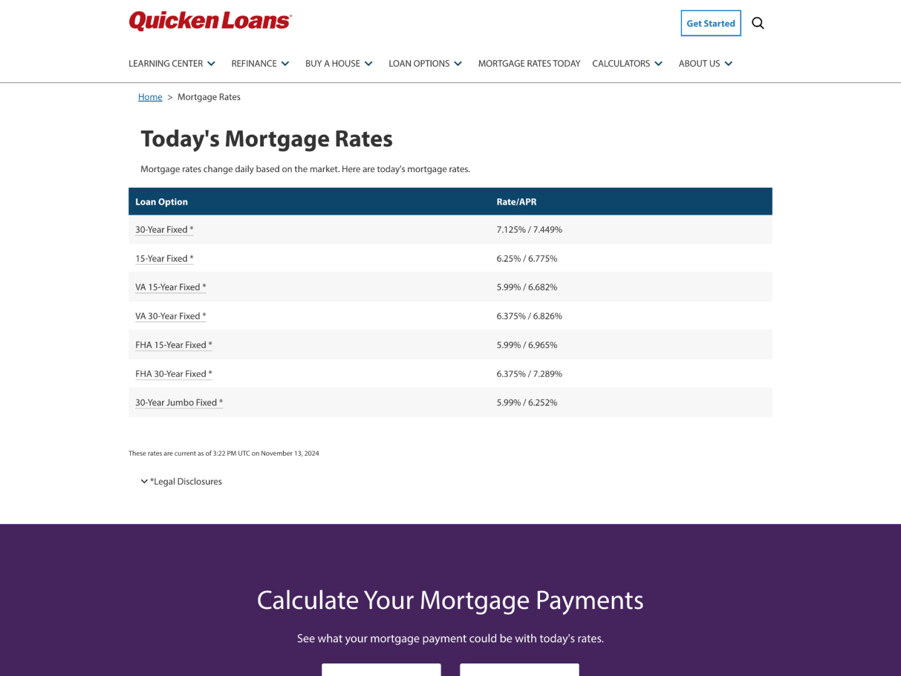
Mortgage Rates Current State
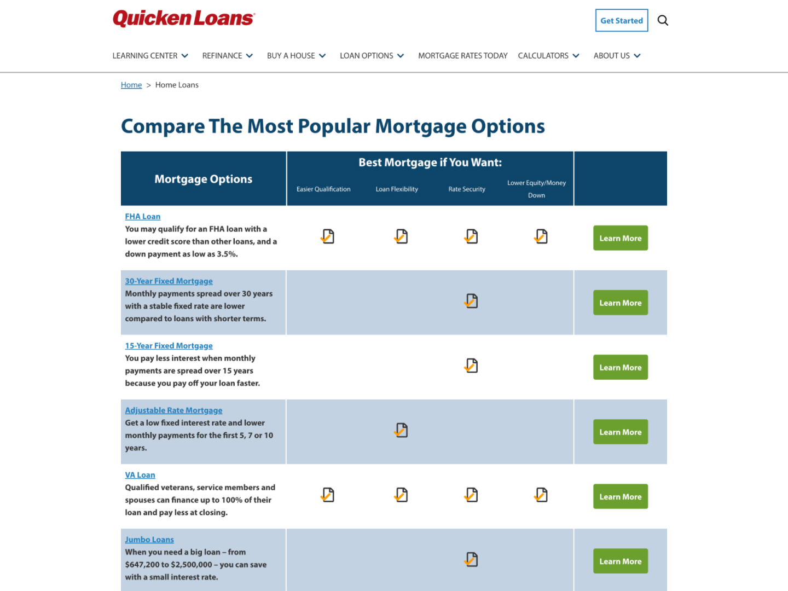
Loan Options Current State
These issues were compounded by CMS limitations and the absence of a shared system, making it difficult to maintain consistency or scale improvements.
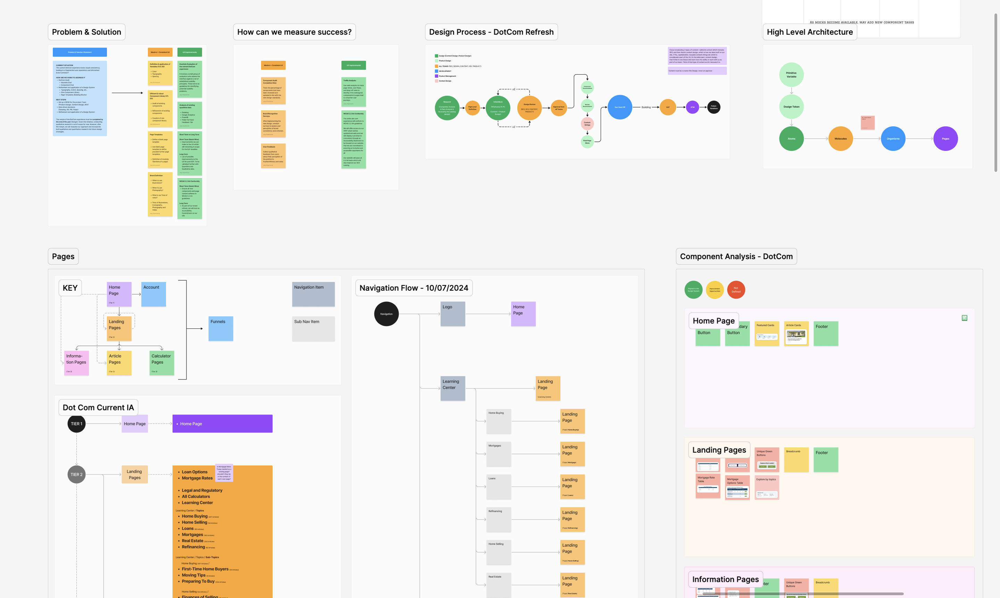
Audit of the product experience
03 Refreshing the brand
Not a new brand, just a more honest one
Research showed that users didn’t clearly understand what QL offered, how it differed from Rocket, or what the brand stood for today. While the name was familiar, it felt outdated. This lack of clarity weakened trust.
Rather than trying to reinvent the brand, we leaned into what it already was. Quicken Loans had the familiarity of something people recognised, but it lacked a clear voice and personality.
Brandscape Exploration
We used that as a foundation, shifting the brand toward something more human and self-aware. Instead of feeling overly polished or corporate, the goal was to feel honest, relatable, and consistent, building trust over time through clarity and personality.
04 Key Journey Redesign
Redesigning key journeys through research and behavioural insights
We applied the refreshed brand and system across key journeys, improving consistency, clarity, and usability. Previously, layouts, components, and tone varied across pages, creating a fragmented experience.
To prioritise effectively, we combined user research, current state analysis, and behavioural data. Analytics and heatmaps showed strong engagement with learning and rate content, but low progression and clear friction in navigation and decision points.
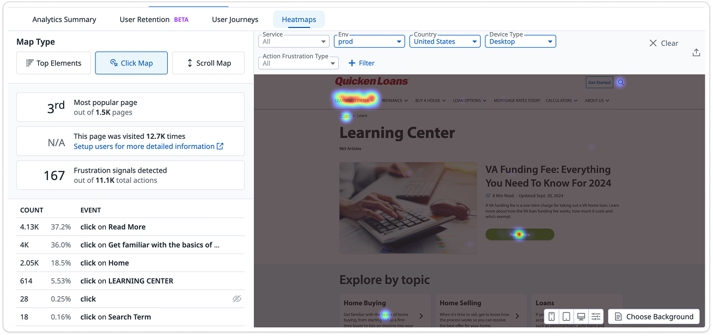
User engagement and friction hotspots
These insights helped us focus on high-impact areas. We redesigned key flows, such as learning centre, rate exploration, and contacting a lender, by simplifying entry points, clarifying hierarchy, and better connecting content to user intent.
Before: Contact Us
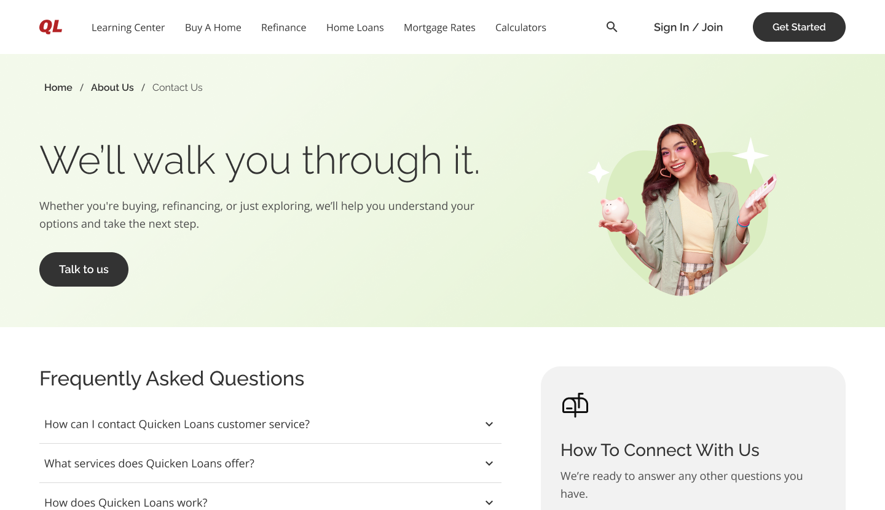
After: Contact Us
By aligning structure and interactions with real user behaviour, we created a more cohesive and intuitive experience, making it easier for users to move forward with confidence.
05 An Accessible Experience
Making the experience accessible by design
Accessibility was built into the foundation of the redesign. The existing experience lacked clear structure, making it difficult to navigate and inconsistent for assistive technologies.
We defined focus order, reading order, page landmarks, and ARIA labels, while also improving focus states, color contrast, and typography to meet accessibility standards.
These patterns were embedded into the design system, improving usability for more users and strengthening site structure for better SEO.
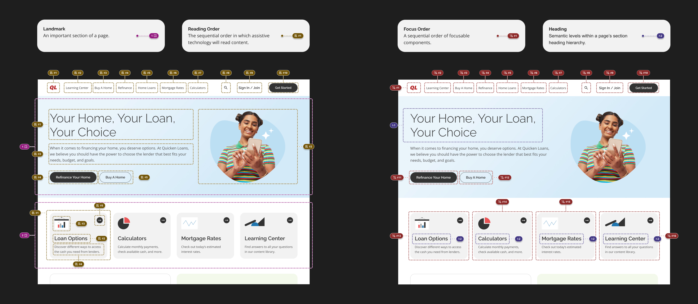
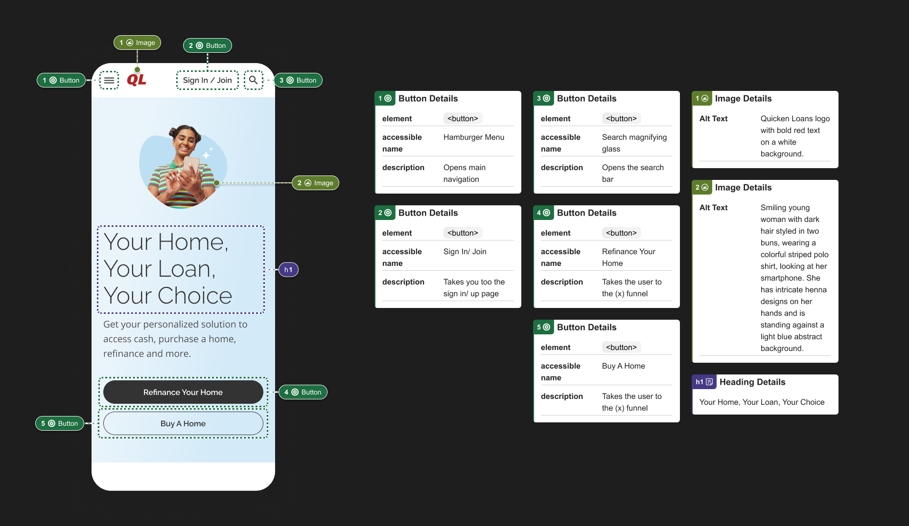
06 Design System
Building a reusable design system
We focused on building a system, not just redesigning pages. Using an atomic design approach, we created reusable foundations, components, and patterns that could scale across the product.
The system was designed to support multiple teams, from developers to content editors, allowing them to create pages quickly within the CMS while maintaining consistency. This improved development speed, reduced duplication, and helped standardize content for better SEO performance.
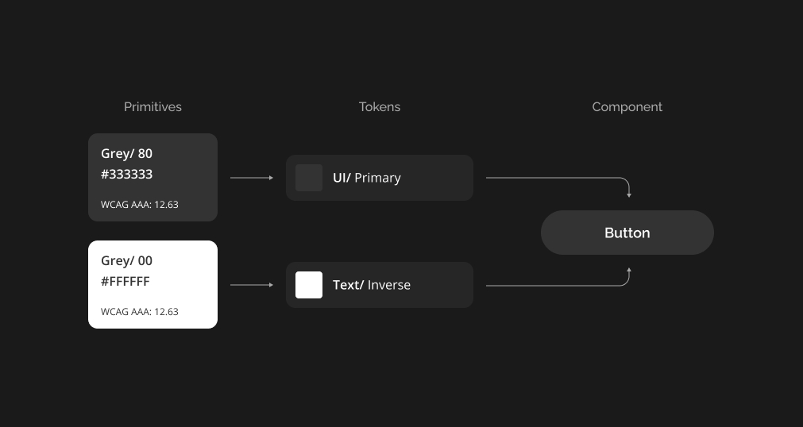
Colour Variable Structure
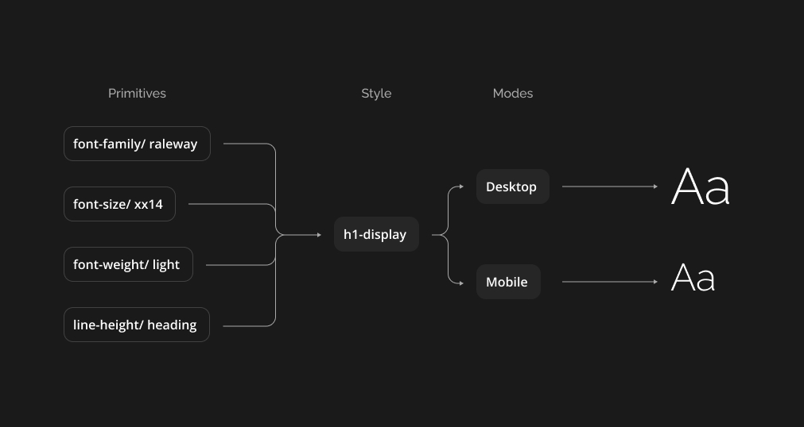
Typography Variable Structure
We structured the system using primitives and tokens. Base values, like color and typography, were defined as primitives and then mapped to semantic tokens used across components.
This separation allowed us to scale and maintain the system more effectively. Global changes could be applied quickly, while still allowing for targeted updates at the token level, such as adjusting a primary CTA without impacting the entire system.
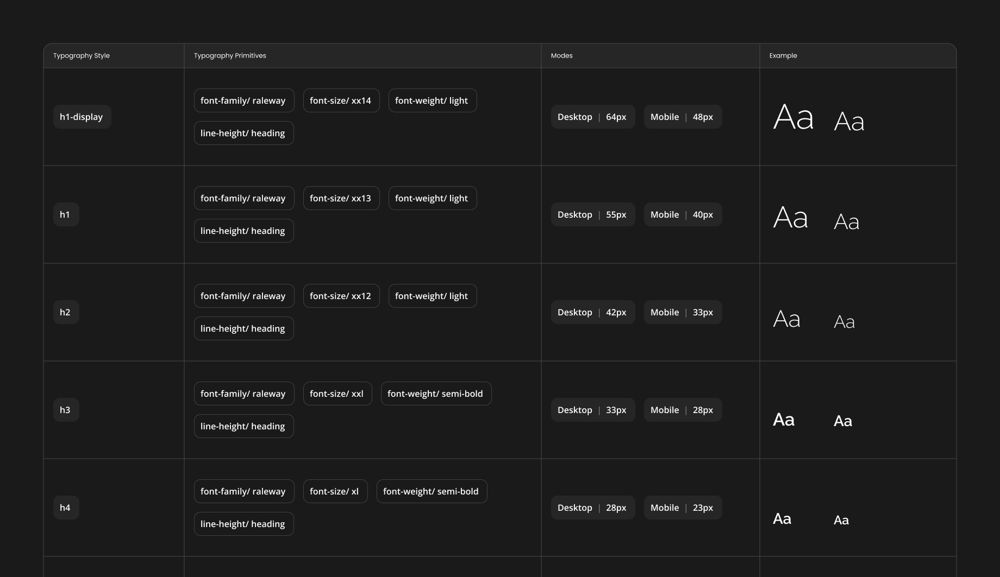
Typgraphy Variables
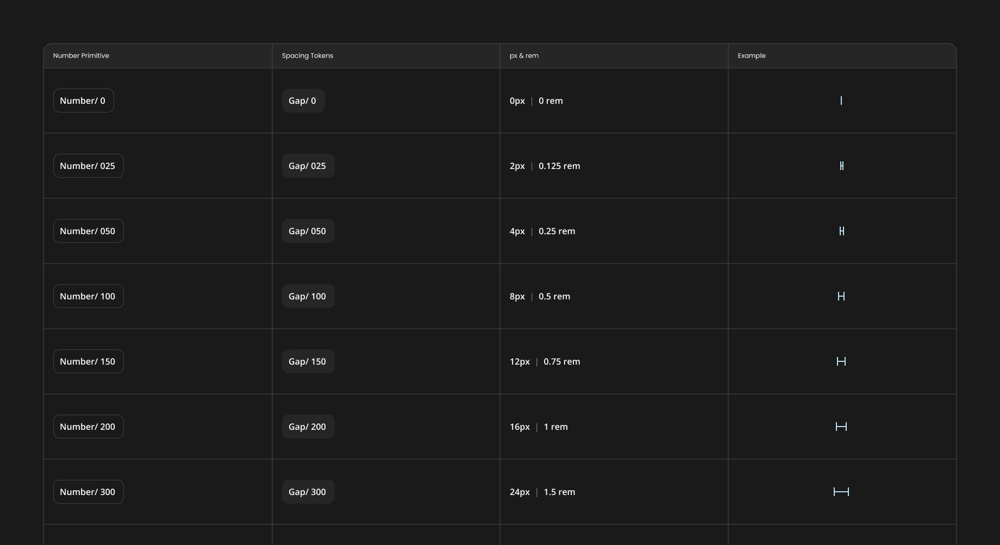
Spacing Variables
We introduced a consistent spacing system and responsive grid to bring structure and alignment across the product. Spacing tokens standardised padding and layout relationships, while the grid system ensured layouts scaled seamlessly across breakpoints.
With a large portion of users on mobile, this allowed us to design responsively from the start, maintaining clarity and usability across all screen sizes.
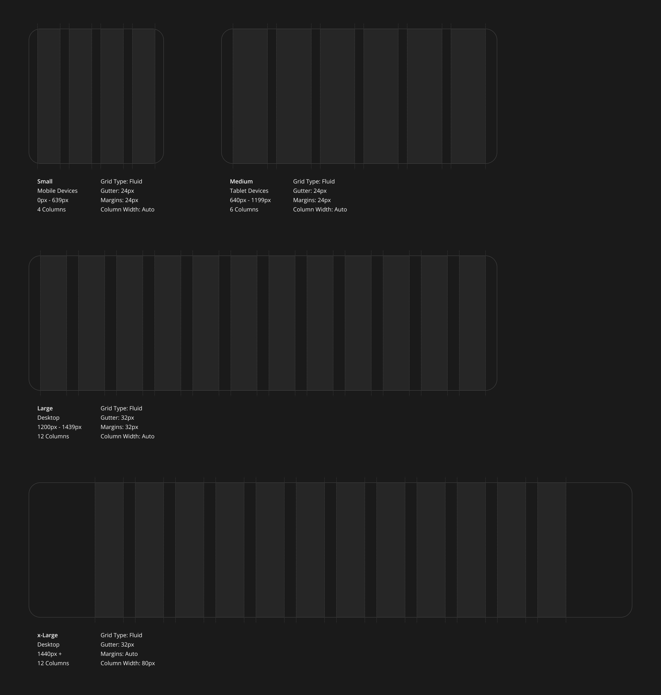
Grids
Components were documented with clear specifications, including spacing, behavior, states, and accessibility. This created a shared reference for both design and development.
We partnered closely with engineering to ensure components were implemented consistently, reducing ambiguity and speeding up handoff. This made it easier for teams to reuse patterns and scale the system across the product.
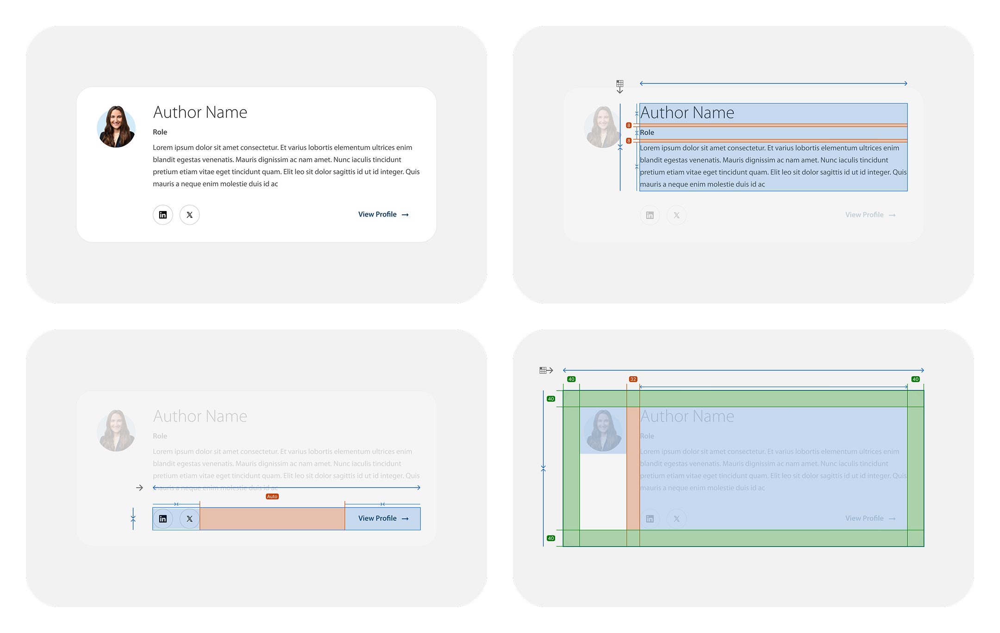
Component Documentation Example
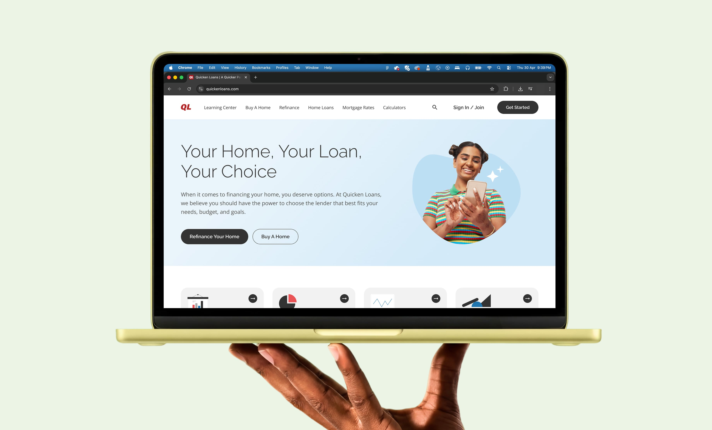
This work shifted the team from fixing pages to building a unified product experience, enabling faster iteration, greater consistency, and a clearer vision moving forward.